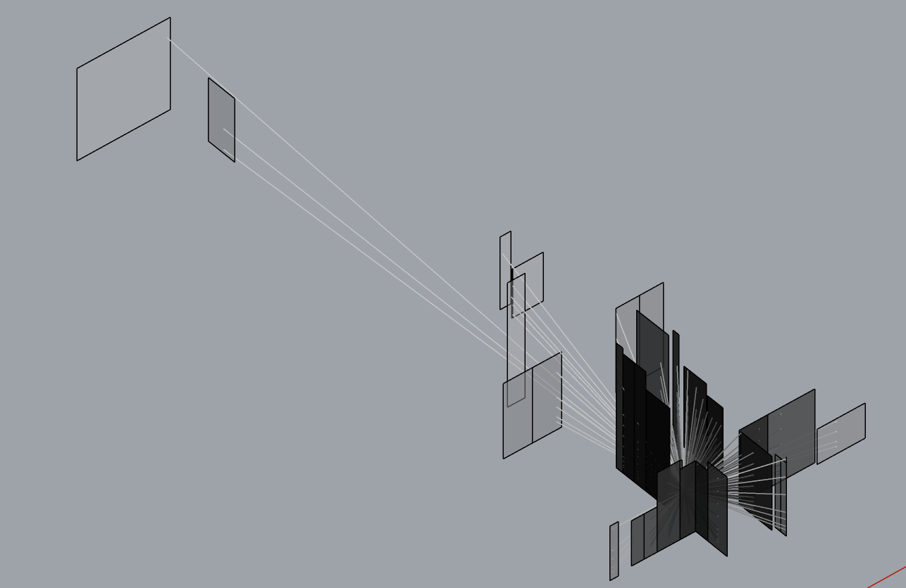

projecting topographies
How is the landscape reformed to correspond to colonial projections, on small and large scales?


How are these viewpoints inserted into landscape?
“The territory no longer precedes the map, nor survives it. Henceforth, it is the map that precedes the territory”
(Jean Baudrillard)
“…the grain represents an area of half a meter in diameter on average on the ground, close to the image’s ‘threshold of detectability’”
(Eyal Weizman, Ground Truth, 44)
"It's about a country, Ariana, in which landscape has allowed its history to happen. This landscape is never to be seen simply as decor or background."
(Marine Hugonnier, A Film Trilogy, 6)
“The inclusion of the absence of an image is deliberate. It tells us that there was something that is no longer there”
(Samia Henni, Colonial Toxicity, 37)
"...a gaze folded in on itself..."
(Eyal Weizman, Hollow Land 132)
“Fanon, according to Moten, wants not the end of colonialism but the end of the standpoint from which colonialism makes sense”
(Jack Halberstam in Fred Moten and Stefano Harney's The Undercommons, 5)
I am interested in exploring materialities, creative cartographies, topographical lines, ecological transformations, through art, investigation, repetition, writing, mapping, and sensing of all kinds.

visualizing perceptions of the built environment through Grasshopper / Rhino
I. an art practice
II. a mapping practice
III. a curatorial practice
IV. a rehearsal


From The Palestinian Museum Digital Archive.